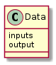

These are classes meant to be dropped into place where Quality classes are called. They take csv-files, convert them to arrays and return matching output values based on indices of the arrays.
class XYDataConstants(object):
"""
Constants for builders of the XYData class
"""
__slots__ = ()
filename_option = 'filename'
delimiter_option = 'delimiter'
skiprows_option = 'skiprows'
usecols_option = 'usecols'
This class takes a filename and reads it in as an array. The constructor parameters are based on the numpy.loadtxt parameters.
XYDataQuality |
|
XYDataQuality.data |
|
XYDataQuality.__call__ |
|
XYDataQuality.check_rep |
|
XYDataQuality.close |
CONFIGURATION = """
[XYData]
# this follows the pattern for plugins --
# the header has to match what's in the Optimizers `components` list
# the component option has to be XYData
component = XYData
# filename is required, everything else has defaults
filename = <path to data file>
delimiter = <column separator (default= ',')
skiprows = <number of rows to skip (default=0)
usecols = <index-list of columns to use (default=all)>
"""
DESCRIPTION = """
The XYData component is a stand-in that converts a delimited file to a nump
y array. It is meant to be used as a `quality` measurement class so expects
its calls to be passed an object with `inputs` and `output` attributes. It
will look up the value in the array using the `inputs` value (so they have
to be valid x and y indices) and set the output. It also keeps a `quality
_checks` attribute that is incremented for each call so the number of check
s can be measured to estimate how long the optimizer would run if it were e
xploring the space that created the data set using an actual call to get th
e output (e.g. how many calls to iperf the optimizer would make).
"""
To match the older-code the call has to expect an object of the form:

If the output is not set it sets it using the inputs and returns the output. It also maintains a count of all the calls made (self.quality_checks) so that the efficiency can be double-checked.
A convenience class for building XYData objects. It implements the plugin interface so the help and list sub-commands can use it.
XYData |
|
XYData.product |